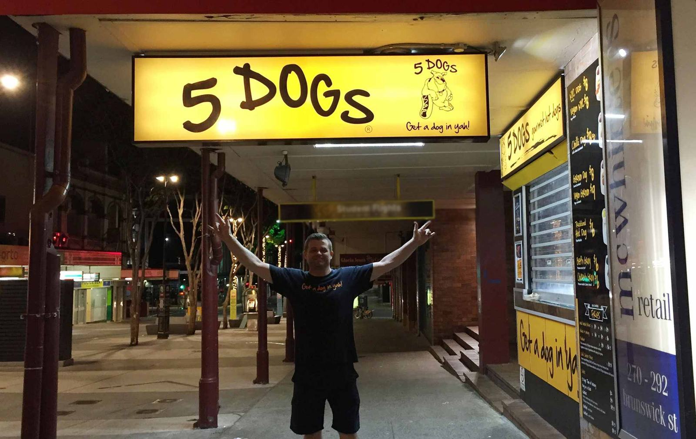

Everyone eats.
Rob opened 5 Dogs in the Valley in 2011 with one idea: late-night fast food that never cuts corners on flavour. Premium sausages, proper toppings, and a vegan menu just as big as the meat one.
Fifteen years on, the yellow sign on Brunswick Street still feeds the night owls, the lunch crowd and everyone in between.